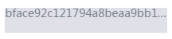

使用‘...’代替文本长出的部分
当我们使用css的控制文本的时候，时常会出现文本的数据比容器宽的情况，这是因为用户的输入是不可控制的，而此时，为了获得较好的用户体验，可以采用在输入长度大于容器所能容纳的最大宽度时，用省略号代替长出的部分，这里有两种常用的方式：
1.css 方式
css code
text-overflow: ellipsis;
overflow: hidden;
white-space: nowrap;
设置这三行后，大部分浏览器都会将超出的部分显示成下图的效果 
此处在ff中有些问题，因为ff不认识text-overflow: ellipsis;这个属性，可以通过max-width来进行控制。 当然，如果需要在鼠标hover的时候展示出全文的话，关键在于将overflow属性置为inherit; 就可以了。
3.1(2016/3/31增加)
对于需要多行后面增加省略号的场景，需要使用到如下代码，注意，只支持部分webkit内核
css code
overflow : hidden;
text-overflow: ellipsis;
display: -webkit-box;
-webkit-line-clamp: 2;
-webkit-box-orient: vertical;
2.js方式
js方式其实很简单，只需要给在输入后，判断文本的长度是不是长于限制宽度，并对得到的字符串进行阶段，然后给字符串手动的添加上3个点就Ok了。
比如:
js code
var str = '我是一个超长的字符串';
var cutStr = str.substr(0, 5) + '...';// output:'我是一个超...'
使用以上代码并将cutStr输出到页面上就完事大吉了,当需要回复是可以给元素绑定mouseover等事件,并将str输出到页面上。
综上，js和css方式虽然都可以实现，但是明显js控制较为复杂，性能也较差，css方式作为简单而有效的方式，确为上佳选择。但是css方式兼容性有点捉急，对于低版本浏览器，还真的是比较悲剧。所以，具体使用哪种方式，可能真的需要视情况而定，甚至可能两者一同使用。当然，对于只考虑现代浏览器的情况下，首选css方式啦。